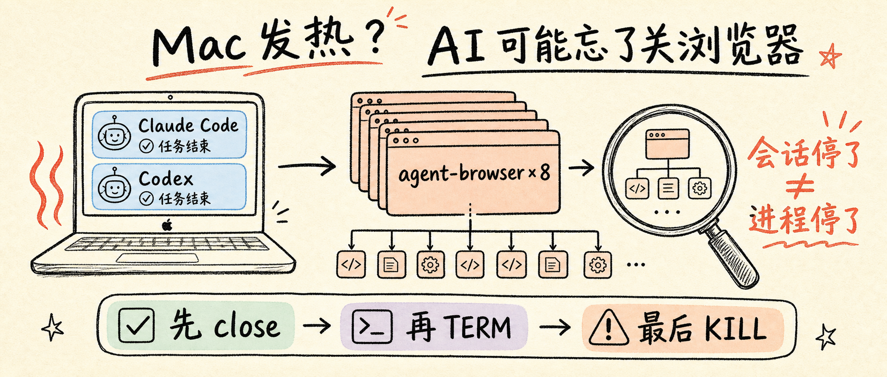
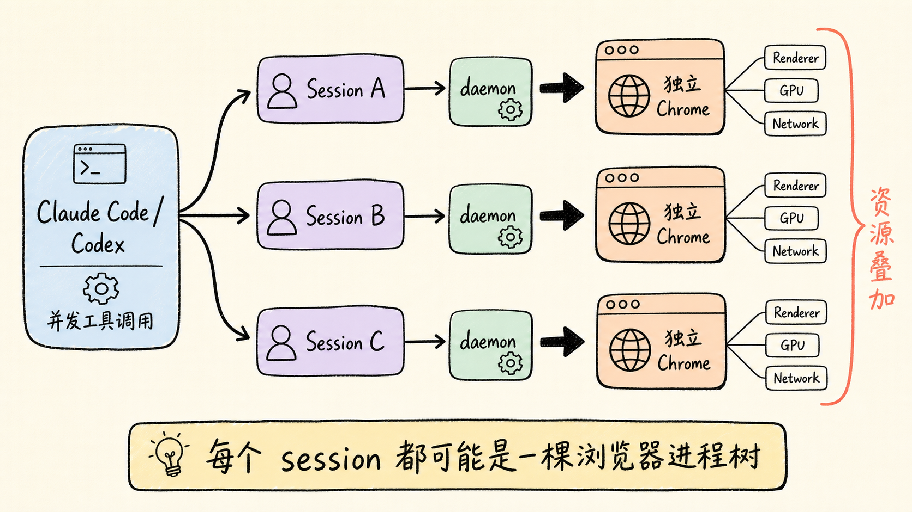
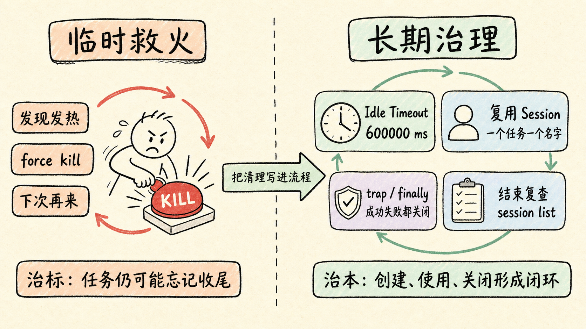

<section style="margin:0 auto;padding:22px 14px 36px;max-width:680px;background:#f4efe6;color:#211f1b;font-family:-apple-system,BlinkMacSystemFont,'PingFang SC','Microsoft YaHei',sans-serif;line-height:1.86;">
  <section style="padding:22px 18px 28px;border-radius:22px;background:#fffaf3;border:1px solid #eadfce;">

  <section style="margin:0 0 20px;padding:8px;border-radius:12px;background:#edf5f2;border:1px solid #d7e8e2;box-sizing:border-box;">
    
    <p style="margin:8px 0 0;color:#39786e;font-size:13px;line-height:1.5;text-align:center;">封面海报</p>
  </section>

<blockquote style="margin:22px 0;padding:16px 18px;border-left:5px solid #d59c47;border-radius:0 14px 14px 0;background:#fbf1de;color:#3d352d;font-size:16px;line-height:1.85;font-weight:600;">Claude Code、Codex 明明已经停下来了，Mac 风扇却还在转，内存也迟迟不降。问题可能不在当前会话，而在一批没有正常收尾的 <code style="background:#f2eadf;border-radius:6px;padding:2px 6px;color:#6f472f;">agent-browser</code> daemon 与自动化 Chrome。</blockquote>
<p style="margin:13px 0;color:#211f1b;font-size:16px;line-height:1.88;">这次我在本机清理了 <strong style="color:#8f3f2f;font-weight:800;">8 组遗留的 agent-browser / Chrome 后台实例及其子进程</strong>。普通 Chrome 标签页没有动，机器热量很快就降了下来。</p>
<p style="margin:13px 0;color:#211f1b;font-size:16px;line-height:1.88;">这不是一个玄学问题，也不能简单归咎于“Chrome 太吃内存”。真正要理解的是：AI 编程工具、浏览器自动化工具、CDP、daemon 和 session 之间，到底是谁启动了谁，又该由谁负责关掉。</p>
<p style="margin:13px 0;color:#211f1b;font-size:16px;line-height:1.88;">&lt;!-- more --&gt;</p>
<h2 style="margin:34px 0 14px;padding:11px 14px;border-left:5px solid #39786e;border-radius:0 12px 12px 0;background:#edf5f2;color:#254d46;font-size:20px;line-height:1.45;font-weight:800;">30 秒结论</h2>
<p style="margin:13px 0;color:#211f1b;font-size:16px;line-height:1.88;">先给赶时间的人答案：</p>
<ul style="margin:16px 0;padding:14px 18px 14px 2em;border-radius:16px;background:#eef6f3;color:#211f1b;font-size:15px;line-height:1.8;">
<li style="margin:7px 0;"><code style="background:#f2eadf;border-radius:6px;padding:2px 6px;color:#6f472f;">agent-browser</code> 采用 <strong style="color:#8f3f2f;font-weight:800;">CLI + 后台 daemon + Chrome</strong> 的架构，daemon 会故意跨命令常驻，以便下一条指令不用重新启动浏览器。</li>
<li style="margin:7px 0;">每个独立 session 都可能拥有自己的浏览器实例。Claude Code、Codex 并发执行多个 agent 或工具任务时，session 数量很容易叠加。</li>
<li style="margin:7px 0;">如果任务异常中断、会话被强制停止，或者调用方忘了执行 <code style="background:#f2eadf;border-radius:6px;padding:2px 6px;color:#6f472f;">agent-browser close</code>，后台进程就可能继续存在。</li>
<li style="margin:7px 0;">CDP 只是控制通道，不是泄漏的根因。根因是 <strong style="color:#8f3f2f;font-weight:800;">浏览器生命周期没有闭环</strong>。</li>
<li style="margin:7px 0;">最优先执行官方收尾命令：<code style="background:#f2eadf;border-radius:6px;padding:2px 6px;color:#6f472f;">agent-browser close --all</code>。只有正常关闭失败，才按特征匹配并发送 <code style="background:#f2eadf;border-radius:6px;padding:2px 6px;color:#6f472f;">TERM</code>，最后才考虑 <code style="background:#f2eadf;border-radius:6px;padding:2px 6px;color:#6f472f;">KILL</code>。</li>
<li style="margin:7px 0;">长期方案是设置空闲超时、复用 session，并要求每个自动化任务在 <code style="background:#f2eadf;border-radius:6px;padding:2px 6px;color:#6f472f;">finally</code> 或 shell <code style="background:#f2eadf;border-radius:6px;padding:2px 6px;color:#6f472f;">trap</code> 中关闭自己的 session。</li>
</ul>
<h2 style="margin:34px 0 14px;padding:11px 14px;border-left:5px solid #39786e;border-radius:0 12px 12px 0;background:#edf5f2;color:#254d46;font-size:20px;line-height:1.45;font-weight:800;">目录</h2>
<ul style="margin:16px 0;padding:14px 18px 14px 2em;border-radius:16px;background:#eef6f3;color:#211f1b;font-size:15px;line-height:1.8;">
<li style="margin:7px 0;">[一、现象：AI 停了，浏览器却没停](#一现象ai-停了浏览器却没停)</li>
<li style="margin:7px 0;">[二、根因：常驻 daemon 遇上并发 session](#二根因常驻-daemon-遇上并发-session)</li>
<li style="margin:7px 0;">[三、先确认，不要上来就 kill](#三先确认不要上来就-kill)</li>
<li style="margin:7px 0;">[四、三层清理：官方关闭、温和终止、强制清理](#四三层清理官方关闭温和终止强制清理)</li>
<li style="margin:7px 0;">[五、怎样保证不误伤普通 Chrome](#五怎样保证不误伤普通-chrome)</li>
<li style="margin:7px 0;">[六、从源头预防：让生命周期闭环](#六从源头预防让生命周期闭环)</li>
<li style="margin:7px 0;">[七、可直接收藏的排查清单](#七可直接收藏的排查清单)</li>
</ul>
<h2 style="margin:34px 0 14px;padding:11px 14px;border-left:5px solid #39786e;border-radius:0 12px 12px 0;background:#edf5f2;color:#254d46;font-size:20px;line-height:1.45;font-weight:800;">一、现象：AI 停了，浏览器却没停</h2>
<p style="margin:13px 0;color:#211f1b;font-size:16px;line-height:1.88;">典型场景是这样的：</p>
<ul style="margin:16px 0;padding:14px 18px 14px 2em;border-radius:16px;background:#eef6f3;color:#211f1b;font-size:15px;line-height:1.8;">
<li style="margin:7px 0;">你让 Claude Code 或 Codex 通过 skill、MCP、shell 工具打开网页；</li>
<li style="margin:7px 0;">自动化任务创建了多个命名 session，甚至并行跑了多个子 agent；</li>
<li style="margin:7px 0;">任务完成或会话终止后，终端已经安静；</li>
<li style="margin:7px 0;">但“活动监视器”里仍有多组 Chrome、Chrome Helper、GPU、Renderer 或 agent-browser 进程；</li>
<li style="margin:7px 0;">合上几次窗口也没用，Mac 继续发热，内存和 CPU 占用居高不下。</li>
</ul>
<p style="margin:13px 0;color:#211f1b;font-size:16px;line-height:1.88;">最迷惑的一点是：这些进程通常没有可见窗口。你看到的普通 Chrome 标签页可能只有几个，但后台自动化 Chrome 使用的是独立临时用户目录，它们和日常浏览器不是同一组实例。</p>
<p style="margin:13px 0;color:#211f1b;font-size:16px;line-height:1.88;">因此，“我已经关掉 Chrome 窗口了”并不能证明自动化浏览器已经退出。</p>
<h2 style="margin:34px 0 14px;padding:11px 14px;border-left:5px solid #39786e;border-radius:0 12px 12px 0;background:#edf5f2;color:#254d46;font-size:20px;line-height:1.45;font-weight:800;">二、根因：常驻 daemon 遇上并发 session</h2>
<p style="margin:13px 0;color:#211f1b;font-size:16px;line-height:1.88;">以本机安装的 <code style="background:#f2eadf;border-radius:6px;padding:2px 6px;color:#6f472f;">agent-browser 0.27.0</code> 为例，官方说明明确写了两件事：</p>
<ul style="margin:16px 0;padding:14px 18px 14px 2em;border-radius:16px;background:#eef6f3;color:#211f1b;font-size:15px;line-height:1.8;">
<li style="margin:7px 0;">它采用 client-daemon 架构，Rust CLI 负责接收命令，Rust daemon 通过 CDP 控制 Chrome；</li>
<li style="margin:7px 0;">daemon 会在第一次命令时自动启动，并在后续命令之间保持运行，以换取更快的响应。</li>
</ul>
<p style="margin:13px 0;color:#211f1b;font-size:16px;line-height:1.88;">与此同时，官方 session 文档也说明：每个 session 都有独立的浏览器实例、Cookie、存储、历史记录和认证状态。</p>
<p style="margin:13px 0;color:#211f1b;font-size:16px;line-height:1.88;">这两点放到多 agent 场景里，就形成了下面的链路：</p>
<section style="margin:26px 0;padding:8px;border-radius:12px;background:#f7f1e8;border:1px solid #eadfce;box-sizing:border-box;"><p style="margin:8px 0 0;color:#92867a;font-size:13px;line-height:1.55;text-align:center;">Claude Code、Codex 到后台 Chrome 的进程与会话链路</p></section>
<p style="margin:13px 0;color:#211f1b;font-size:16px;line-height:1.88;"><code style="background:#f2eadf;border-radius:6px;padding:2px 6px;color:#6f472f;">`</code>text</p>
<p style="margin:13px 0;color:#211f1b;font-size:16px;line-height:1.88;">Claude Code / Codex</p>
<p style="margin:13px 0;color:#211f1b;font-size:16px;line-height:1.88;">│</p>
<p style="margin:13px 0;color:#211f1b;font-size:16px;line-height:1.88;">├─ Agent A → session A → daemon A → Chrome A → Renderer / GPU / Network</p>
<p style="margin:13px 0;color:#211f1b;font-size:16px;line-height:1.88;">├─ Agent B → session B → daemon B → Chrome B → Renderer / GPU / Network</p>
<p style="margin:13px 0;color:#211f1b;font-size:16px;line-height:1.88;">└─ Agent C → session C → daemon C → Chrome C → Renderer / GPU / Network</p>
<p style="margin:13px 0;color:#211f1b;font-size:16px;line-height:1.88;"><code style="background:#f2eadf;border-radius:6px;padding:2px 6px;color:#6f472f;">`</code></p>
<p style="margin:13px 0;color:#211f1b;font-size:16px;line-height:1.88;">单看一组并不可怕。真正吃资源的是“多组浏览器进程树一起常驻”。一个 Chrome 主进程还会派生渲染、GPU、网络等子进程，所以 8 个遗留实例在活动监视器里看起来可能远不止 8 行。</p>
<h3 style="margin:24px 0 10px;color:#7a4e34;font-size:17px;line-height:1.45;font-weight:800;">CDP 是不是罪魁祸首？</h3>
<p style="margin:13px 0;color:#211f1b;font-size:16px;line-height:1.88;">不是。</p>
<p style="margin:13px 0;color:#211f1b;font-size:16px;line-height:1.88;">CDP（Chrome DevTools Protocol）只是自动化工具与 Chrome 之间的控制协议。它负责导航、点击、读取 DOM、截图等操作，但不会替调用方决定“任务什么时候算结束”。</p>
<p style="margin:13px 0;color:#211f1b;font-size:16px;line-height:1.88;">真正缺失的是这条生命周期：</p>
<p style="margin:13px 0;color:#211f1b;font-size:16px;line-height:1.88;"><code style="background:#f2eadf;border-radius:6px;padding:2px 6px;color:#6f472f;">`</code>text</p>
<p style="margin:13px 0;color:#211f1b;font-size:16px;line-height:1.88;">创建 session → 使用浏览器 → 任务成功或失败 → 关闭 session → 回收 daemon 和 Chrome</p>
<p style="margin:13px 0;color:#211f1b;font-size:16px;line-height:1.88;"><code style="background:#f2eadf;border-radius:6px;padding:2px 6px;color:#6f472f;">`</code></p>
<p style="margin:13px 0;color:#211f1b;font-size:16px;line-height:1.88;">如果最后两步没有执行，前面的资源就可能继续留在后台。</p>
<blockquote style="margin:22px 0;padding:16px 18px;border-left:5px solid #d59c47;border-radius:0 14px 14px 0;background:#fbf1de;color:#3d352d;font-size:16px;line-height:1.85;font-weight:600;"><strong style="color:#8f3f2f;font-weight:800;">关键判断：</strong> 不是 AI “还在思考”，而是 AI 启动的外部进程已经脱离了当前对话的可见范围。</blockquote>
<h2 style="margin:34px 0 14px;padding:11px 14px;border-left:5px solid #39786e;border-radius:0 12px 12px 0;background:#edf5f2;color:#254d46;font-size:20px;line-height:1.45;font-weight:800;">三、先确认，不要上来就 kill</h2>
<p style="margin:13px 0;color:#211f1b;font-size:16px;line-height:1.88;">清理前先分清三件事：有多少活动 session、有哪些 agent-browser daemon、哪些 Chrome 使用了 agent-browser 的临时用户目录。</p>
<h3 style="margin:24px 0 10px;color:#7a4e34;font-size:17px;line-height:1.45;font-weight:800;">1. 查看 agent-browser 自己记录的活动 session</h3>
<p style="margin:13px 0;color:#211f1b;font-size:16px;line-height:1.88;"><code style="background:#f2eadf;border-radius:6px;padding:2px 6px;color:#6f472f;">`</code>bash</p>
<p style="margin:13px 0;color:#211f1b;font-size:16px;line-height:1.88;">agent-browser session list</p>
<p style="margin:13px 0;color:#211f1b;font-size:16px;line-height:1.88;"><code style="background:#f2eadf;border-radius:6px;padding:2px 6px;color:#6f472f;">`</code></p>
<p style="margin:13px 0;color:#211f1b;font-size:16px;line-height:1.88;">如果版本支持 JSON：</p>
<p style="margin:13px 0;color:#211f1b;font-size:16px;line-height:1.88;"><code style="background:#f2eadf;border-radius:6px;padding:2px 6px;color:#6f472f;">`</code>bash</p>
<p style="margin:13px 0;color:#211f1b;font-size:16px;line-height:1.88;">agent-browser session list --json</p>
<p style="margin:13px 0;color:#211f1b;font-size:16px;line-height:1.88;"><code style="background:#f2eadf;border-radius:6px;padding:2px 6px;color:#6f472f;">`</code></p>
<p style="margin:13px 0;color:#211f1b;font-size:16px;line-height:1.88;">这一步最可信，因为它从工具自己的会话视角回答“现在认为谁还活着”。</p>
<h3 style="margin:24px 0 10px;color:#7a4e34;font-size:17px;line-height:1.45;font-weight:800;">2. 查看 daemon 和自动化 Chrome</h3>
<p style="margin:13px 0;color:#211f1b;font-size:16px;line-height:1.88;">macOS 上可以使用：</p>
<p style="margin:13px 0;color:#211f1b;font-size:16px;line-height:1.88;"><code style="background:#f2eadf;border-radius:6px;padding:2px 6px;color:#6f472f;">`</code>bash</p>
<p style="margin:13px 0;color:#211f1b;font-size:16px;line-height:1.88;">pgrep -fl &#x27;/agent-browser/bin/agent-browser-darwin-(arm64|x64)( |$)&#x27;</p>
<p style="margin:13px 0;color:#211f1b;font-size:16px;line-height:1.88;">pgrep -fl &#x27;[G]oogle Chrome.*--user-data-dir=[^ ]*/agent-browser-chrome-&#x27;</p>
<p style="margin:13px 0;color:#211f1b;font-size:16px;line-height:1.88;"><code style="background:#f2eadf;border-radius:6px;padding:2px 6px;color:#6f472f;">`</code></p>
<p style="margin:13px 0;color:#211f1b;font-size:16px;line-height:1.88;">第二条命令的关键不是进程名“Google Chrome”，而是启动参数中的：</p>
<p style="margin:13px 0;color:#211f1b;font-size:16px;line-height:1.88;"><code style="background:#f2eadf;border-radius:6px;padding:2px 6px;color:#6f472f;">`</code>text</p>
<p style="margin:13px 0;color:#211f1b;font-size:16px;line-height:1.88;">--user-data-dir=.../agent-browser-chrome-...</p>
<p style="margin:13px 0;color:#211f1b;font-size:16px;line-height:1.88;"><code style="background:#f2eadf;border-radius:6px;padding:2px 6px;color:#6f472f;">`</code></p>
<p style="margin:13px 0;color:#211f1b;font-size:16px;line-height:1.88;">它说明这个 Chrome 使用的是 agent-browser 创建的隔离用户目录，而不是你日常使用的默认 Chrome Profile。</p>
<h3 style="margin:24px 0 10px;color:#7a4e34;font-size:17px;line-height:1.45;font-weight:800;">3. 按 CPU、内存和运行时间查看完整进程树</h3>
<p style="margin:13px 0;color:#211f1b;font-size:16px;line-height:1.88;"><code style="background:#f2eadf;border-radius:6px;padding:2px 6px;color:#6f472f;">`</code>bash</p>
<p style="margin:13px 0;color:#211f1b;font-size:16px;line-height:1.88;">ps -axo pid,ppid,%cpu,%mem,rss,etime,command \</p>
<p style="margin:13px 0;color:#211f1b;font-size:16px;line-height:1.88;">| grep -E &#x27;[a]gent-browser-darwin|[a]gent-browser-chrome-&#x27;</p>
<p style="margin:13px 0;color:#211f1b;font-size:16px;line-height:1.88;"><code style="background:#f2eadf;border-radius:6px;padding:2px 6px;color:#6f472f;">`</code></p>
<p style="margin:13px 0;color:#211f1b;font-size:16px;line-height:1.88;">字段含义：</p>
<ul style="margin:16px 0;padding:14px 18px 14px 2em;border-radius:16px;background:#eef6f3;color:#211f1b;font-size:15px;line-height:1.8;">
<li style="margin:7px 0;"><code style="background:#f2eadf;border-radius:6px;padding:2px 6px;color:#6f472f;">PID</code>：当前进程编号，后续终止时使用。</li>
<li style="margin:7px 0;"><code style="background:#f2eadf;border-radius:6px;padding:2px 6px;color:#6f472f;">PPID</code>：父进程编号，用来判断 daemon 与 Chrome 的父子关系。</li>
<li style="margin:7px 0;"><code style="background:#f2eadf;border-radius:6px;padding:2px 6px;color:#6f472f;">%CPU</code>：CPU 占用，观察它是否持续让机器发热。</li>
<li style="margin:7px 0;"><code style="background:#f2eadf;border-radius:6px;padding:2px 6px;color:#6f472f;">%MEM</code> / <code style="background:#f2eadf;border-radius:6px;padding:2px 6px;color:#6f472f;">RSS</code>：内存占用，确认多个实例是否不断叠加。</li>
<li style="margin:7px 0;"><code style="background:#f2eadf;border-radius:6px;padding:2px 6px;color:#6f472f;">ETIME</code>：已运行时间，判断它是否早已超过当前 AI 任务时长。</li>
<li style="margin:7px 0;"><code style="background:#f2eadf;border-radius:6px;padding:2px 6px;color:#6f472f;">COMMAND</code>：完整启动命令，确认是否带有 agent-browser 特征参数。</li>
</ul>
<p style="margin:13px 0;color:#211f1b;font-size:16px;line-height:1.88;">不要只看 <code style="background:#f2eadf;border-radius:6px;padding:2px 6px;color:#6f472f;">~/.agent-browser</code> 下有没有 <code style="background:#f2eadf;border-radius:6px;padding:2px 6px;color:#6f472f;">.pid</code>、<code style="background:#f2eadf;border-radius:6px;padding:2px 6px;color:#6f472f;">.sock</code> 文件。它们可能只是过期的 sidecar 文件，并不等于进程仍然存活。进程是否活着，最终以 <code style="background:#f2eadf;border-radius:6px;padding:2px 6px;color:#6f472f;">session list</code>、<code style="background:#f2eadf;border-radius:6px;padding:2px 6px;color:#6f472f;">ps</code> 和 <code style="background:#f2eadf;border-radius:6px;padding:2px 6px;color:#6f472f;">pgrep</code> 为准。</p>
<h2 style="margin:34px 0 14px;padding:11px 14px;border-left:5px solid #39786e;border-radius:0 12px 12px 0;background:#edf5f2;color:#254d46;font-size:20px;line-height:1.45;font-weight:800;">四、三层清理：官方关闭、温和终止、强制清理</h2>
<section style="margin:26px 0;padding:8px;border-radius:12px;background:#f7f1e8;border:1px solid #eadfce;box-sizing:border-box;"><p style="margin:8px 0 0;color:#92867a;font-size:13px;line-height:1.55;text-align:center;">从官方关闭到强制清理的安全操作流程</p></section>
<h3 style="margin:24px 0 10px;color:#7a4e34;font-size:17px;line-height:1.45;font-weight:800;">第一层：让 agent-browser 自己收尾</h3>
<p style="margin:13px 0;color:#211f1b;font-size:16px;line-height:1.88;">优先执行：</p>
<p style="margin:13px 0;color:#211f1b;font-size:16px;line-height:1.88;"><code style="background:#f2eadf;border-radius:6px;padding:2px 6px;color:#6f472f;">`</code>bash</p>
<p style="margin:13px 0;color:#211f1b;font-size:16px;line-height:1.88;">agent-browser close --all</p>
<p style="margin:13px 0;color:#211f1b;font-size:16px;line-height:1.88;"><code style="background:#f2eadf;border-radius:6px;padding:2px 6px;color:#6f472f;">`</code></p>
<p style="margin:13px 0;color:#211f1b;font-size:16px;line-height:1.88;">然后清理过期的 pid、socket、version 等 sidecar 文件：</p>
<p style="margin:13px 0;color:#211f1b;font-size:16px;line-height:1.88;"><code style="background:#f2eadf;border-radius:6px;padding:2px 6px;color:#6f472f;">`</code>bash</p>
<p style="margin:13px 0;color:#211f1b;font-size:16px;line-height:1.88;">agent-browser doctor --offline --quick</p>
<p style="margin:13px 0;color:#211f1b;font-size:16px;line-height:1.88;"><code style="background:#f2eadf;border-radius:6px;padding:2px 6px;color:#6f472f;">`</code></p>
<p style="margin:13px 0;color:#211f1b;font-size:16px;line-height:1.88;">当前版本的 <code style="background:#f2eadf;border-radius:6px;padding:2px 6px;color:#6f472f;">doctor</code> 会自动清理陈旧的 daemon sidecar 文件；<code style="background:#f2eadf;border-radius:6px;padding:2px 6px;color:#6f472f;">--fix</code> 还可能执行重装 Chrome、清理旧状态等破坏性修复，因此日常排查先不要加 <code style="background:#f2eadf;border-radius:6px;padding:2px 6px;color:#6f472f;">--fix</code>。</p>
<p style="margin:13px 0;color:#211f1b;font-size:16px;line-height:1.88;">再次验证：</p>
<p style="margin:13px 0;color:#211f1b;font-size:16px;line-height:1.88;"><code style="background:#f2eadf;border-radius:6px;padding:2px 6px;color:#6f472f;">`</code>bash</p>
<p style="margin:13px 0;color:#211f1b;font-size:16px;line-height:1.88;">agent-browser session list</p>
<p style="margin:13px 0;color:#211f1b;font-size:16px;line-height:1.88;">pgrep -fl &#x27;/agent-browser/bin/agent-browser-darwin-(arm64|x64)( |$)&#x27;</p>
<p style="margin:13px 0;color:#211f1b;font-size:16px;line-height:1.88;">pgrep -fl &#x27;[G]oogle Chrome.*--user-data-dir=[^ ]*/agent-browser-chrome-&#x27;</p>
<p style="margin:13px 0;color:#211f1b;font-size:16px;line-height:1.88;"><code style="background:#f2eadf;border-radius:6px;padding:2px 6px;color:#6f472f;">`</code></p>
<p style="margin:13px 0;color:#211f1b;font-size:16px;line-height:1.88;">如果没有输出，说明已经清干净。</p>
<h3 style="margin:24px 0 10px;color:#7a4e34;font-size:17px;line-height:1.45;font-weight:800;">第二层：发送 TERM，让进程有机会优雅退出</h3>
<p style="margin:13px 0;color:#211f1b;font-size:16px;line-height:1.88;">只有官方关闭失败时再执行：</p>
<p style="margin:13px 0;color:#211f1b;font-size:16px;line-height:1.88;"><code style="background:#f2eadf;border-radius:6px;padding:2px 6px;color:#6f472f;">`</code>bash</p>
<p style="margin:13px 0;color:#211f1b;font-size:16px;line-height:1.88;">pgrep -f &#x27;/agent-browser/bin/agent-browser-darwin-(arm64|x64)( |$)&#x27; \</p>
<p style="margin:13px 0;color:#211f1b;font-size:16px;line-height:1.88;">| xargs -n 1 kill -TERM 2&gt;/dev/null || true</p>
<p style="margin:13px 0;color:#211f1b;font-size:16px;line-height:1.88;">pgrep -f &#x27;[G]oogle Chrome.*--user-data-dir=[^ ]*/agent-browser-chrome-&#x27; \</p>
<p style="margin:13px 0;color:#211f1b;font-size:16px;line-height:1.88;">| xargs -n 1 kill -TERM 2&gt;/dev/null || true</p>
<p style="margin:13px 0;color:#211f1b;font-size:16px;line-height:1.88;"><code style="background:#f2eadf;border-radius:6px;padding:2px 6px;color:#6f472f;">`</code></p>
<p style="margin:13px 0;color:#211f1b;font-size:16px;line-height:1.88;"><code style="background:#f2eadf;border-radius:6px;padding:2px 6px;color:#6f472f;">TERM</code> 会给进程处理退出、关闭文件和回收子进程的机会。执行后等 3 秒，再跑一次检查命令。</p>
<h3 style="margin:24px 0 10px;color:#7a4e34;font-size:17px;line-height:1.45;font-weight:800;">第三层：只对仍残留的目标使用 KILL</h3>
<p style="margin:13px 0;color:#211f1b;font-size:16px;line-height:1.88;"><code style="background:#f2eadf;border-radius:6px;padding:2px 6px;color:#6f472f;">`</code>bash</p>
<p style="margin:13px 0;color:#211f1b;font-size:16px;line-height:1.88;">pgrep -f &#x27;/agent-browser/bin/agent-browser-darwin-(arm64|x64)( |$)&#x27; \</p>
<p style="margin:13px 0;color:#211f1b;font-size:16px;line-height:1.88;">| xargs -n 1 kill -KILL 2&gt;/dev/null || true</p>
<p style="margin:13px 0;color:#211f1b;font-size:16px;line-height:1.88;">pgrep -f &#x27;[G]oogle Chrome.*--user-data-dir=[^ ]*/agent-browser-chrome-&#x27; \</p>
<p style="margin:13px 0;color:#211f1b;font-size:16px;line-height:1.88;">| xargs -n 1 kill -KILL 2&gt;/dev/null || true</p>
<p style="margin:13px 0;color:#211f1b;font-size:16px;line-height:1.88;"><code style="background:#f2eadf;border-radius:6px;padding:2px 6px;color:#6f472f;">`</code></p>
<p style="margin:13px 0;color:#211f1b;font-size:16px;line-height:1.88;"><code style="background:#f2eadf;border-radius:6px;padding:2px 6px;color:#6f472f;">KILL</code> 不允许进程执行清理逻辑，只适合处理已经卡死、无法响应 <code style="background:#f2eadf;border-radius:6px;padding:2px 6px;color:#6f472f;">TERM</code> 的残留。正在进行的自动化、下载、表单填写和未保存状态都会立即丢失。</p>
<h3 style="margin:24px 0 10px;color:#7a4e34;font-size:17px;line-height:1.45;font-weight:800;">仓库里放一个可重复使用的脚本</h3>
<p style="margin:13px 0;color:#211f1b;font-size:16px;line-height:1.88;">本文配套脚本已放在：</p>
<p style="margin:13px 0;color:#211f1b;font-size:16px;line-height:1.88;"><code style="background:#f2eadf;border-radius:6px;padding:2px 6px;color:#6f472f;">`</code>text</p>
<p style="margin:13px 0;color:#211f1b;font-size:16px;line-height:1.88;">scripts_py/agent_browser_cleanup.sh</p>
<p style="margin:13px 0;color:#211f1b;font-size:16px;line-height:1.88;"><code style="background:#f2eadf;border-radius:6px;padding:2px 6px;color:#6f472f;">`</code></p>
<p style="margin:13px 0;color:#211f1b;font-size:16px;line-height:1.88;">使用方式：</p>
<p style="margin:13px 0;color:#211f1b;font-size:16px;line-height:1.88;"><code style="background:#f2eadf;border-radius:6px;padding:2px 6px;color:#6f472f;">`</code>bash</p>
<p style="margin:13px 0;color:#211f1b;font-size:16px;line-height:1.88;">./scripts_py/agent_browser_cleanup.sh status</p>
<p style="margin:13px 0;color:#211f1b;font-size:16px;line-height:1.88;">./scripts_py/agent_browser_cleanup.sh close</p>
<p style="margin:13px 0;color:#211f1b;font-size:16px;line-height:1.88;">./scripts_py/agent_browser_cleanup.sh force</p>
<p style="margin:13px 0;color:#211f1b;font-size:16px;line-height:1.88;"><code style="background:#f2eadf;border-radius:6px;padding:2px 6px;color:#6f472f;">`</code></p>
<p style="margin:13px 0;color:#211f1b;font-size:16px;line-height:1.88;">三条命令依次对应：只查看、官方关闭并清理 sidecar、官方关闭失败后的分级强制清理。</p>
<h2 style="margin:34px 0 14px;padding:11px 14px;border-left:5px solid #39786e;border-radius:0 12px 12px 0;background:#edf5f2;color:#254d46;font-size:20px;line-height:1.45;font-weight:800;">五、怎样保证不误伤普通 Chrome</h2>
<p style="margin:13px 0;color:#211f1b;font-size:16px;line-height:1.88;">不要使用下面这种“大锤”：</p>
<p style="margin:13px 0;color:#211f1b;font-size:16px;line-height:1.88;"><code style="background:#f2eadf;border-radius:6px;padding:2px 6px;color:#6f472f;">`</code>bash</p>
<p style="margin:13px 0;color:#211f1b;font-size:16px;line-height:1.88;">killall &#x27;Google Chrome&#x27;</p>
<p style="margin:13px 0;color:#211f1b;font-size:16px;line-height:1.88;">pkill -f &#x27;Google Chrome&#x27;</p>
<p style="margin:13px 0;color:#211f1b;font-size:16px;line-height:1.88;"><code style="background:#f2eadf;border-radius:6px;padding:2px 6px;color:#6f472f;">`</code></p>
<p style="margin:13px 0;color:#211f1b;font-size:16px;line-height:1.88;">它们会把普通 Chrome 窗口和日常标签页一起关掉。</p>
<p style="margin:13px 0;color:#211f1b;font-size:16px;line-height:1.88;">本文脚本采用两层限制：</p>
<p style="margin:13px 0;color:#211f1b;font-size:16px;line-height:1.88;">1. daemon 必须匹配 <code style="background:#f2eadf;border-radius:6px;padding:2px 6px;color:#6f472f;">agent-browser-darwin-arm64</code> 或 <code style="background:#f2eadf;border-radius:6px;padding:2px 6px;color:#6f472f;">agent-browser-darwin-x64</code> 的安装路径；</p>
<p style="margin:13px 0;color:#211f1b;font-size:16px;line-height:1.88;">2. Chrome 必须带有 <code style="background:#f2eadf;border-radius:6px;padding:2px 6px;color:#6f472f;">--user-data-dir=.../agent-browser-chrome-...</code> 参数。</p>
<p style="margin:13px 0;color:#211f1b;font-size:16px;line-height:1.88;">也就是说，它针对的是 agent-browser 创建的隔离 Chrome，不是所有名为 Google Chrome 的进程。</p>
<p style="margin:13px 0;color:#211f1b;font-size:16px;line-height:1.88;">不过还有一个例外需要注意：如果你主动使用 <code style="background:#f2eadf;border-radius:6px;padding:2px 6px;color:#6f472f;">--cdp</code> 或 <code style="background:#f2eadf;border-radius:6px;padding:2px 6px;color:#6f472f;">--auto-connect</code> 连接了日常 Chrome，那么自动化 session 与普通浏览器之间的边界会变得更近。此时先用 <code style="background:#f2eadf;border-radius:6px;padding:2px 6px;color:#6f472f;">session list</code> 和完整命令行确认，不要直接执行强制清理。</p>
<h2 style="margin:34px 0 14px;padding:11px 14px;border-left:5px solid #39786e;border-radius:0 12px 12px 0;background:#edf5f2;color:#254d46;font-size:20px;line-height:1.45;font-weight:800;">六、从源头预防：让生命周期闭环</h2>
<p style="margin:13px 0;color:#211f1b;font-size:16px;line-height:1.88;">清理脚本只是灭火器。更好的办法是让每个任务都负责关掉自己打开的浏览器。</p>
<section style="margin:26px 0;padding:8px;border-radius:12px;background:#f7f1e8;border:1px solid #eadfce;box-sizing:border-box;"><p style="margin:8px 0 0;color:#92867a;font-size:13px;line-height:1.55;text-align:center;">临时救火与长期防护的对比清单</p></section>
<h3 style="margin:24px 0 10px;color:#7a4e34;font-size:17px;line-height:1.45;font-weight:800;">1. 设置 daemon 空闲自动退出</h3>
<p style="margin:13px 0;color:#211f1b;font-size:16px;line-height:1.88;">官方提供了 <code style="background:#f2eadf;border-radius:6px;padding:2px 6px;color:#6f472f;">AGENT_BROWSER_IDLE_TIMEOUT_MS</code>。例如 10 分钟无命令后自动关闭浏览器并退出 daemon：</p>
<p style="margin:13px 0;color:#211f1b;font-size:16px;line-height:1.88;"><code style="background:#f2eadf;border-radius:6px;padding:2px 6px;color:#6f472f;">`</code>bash</p>
<p style="margin:13px 0;color:#211f1b;font-size:16px;line-height:1.88;">export AGENT_BROWSER_IDLE_TIMEOUT_MS=600000</p>
<p style="margin:13px 0;color:#211f1b;font-size:16px;line-height:1.88;"><code style="background:#f2eadf;border-radius:6px;padding:2px 6px;color:#6f472f;">`</code></p>
<p style="margin:13px 0;color:#211f1b;font-size:16px;line-height:1.88;">长期使用可以写入 <code style="background:#f2eadf;border-radius:6px;padding:2px 6px;color:#6f472f;">~/.zshrc</code>：</p>
<p style="margin:13px 0;color:#211f1b;font-size:16px;line-height:1.88;"><code style="background:#f2eadf;border-radius:6px;padding:2px 6px;color:#6f472f;">`</code>bash</p>
<p style="margin:13px 0;color:#211f1b;font-size:16px;line-height:1.88;">echo &#x27;export AGENT_BROWSER_IDLE_TIMEOUT_MS=600000&#x27; &gt;&gt; ~/.zshrc</p>
<p style="margin:13px 0;color:#211f1b;font-size:16px;line-height:1.88;">source ~/.zshrc</p>
<p style="margin:13px 0;color:#211f1b;font-size:16px;line-height:1.88;"><code style="background:#f2eadf;border-radius:6px;padding:2px 6px;color:#6f472f;">`</code></p>
<p style="margin:13px 0;color:#211f1b;font-size:16px;line-height:1.88;">10 分钟只是一个稳妥起点。频繁执行长任务可以设为 30 分钟；偶尔使用、机器资源紧张时可以设为 3 到 5 分钟。</p>
<h3 style="margin:24px 0 10px;color:#7a4e34;font-size:17px;line-height:1.45;font-weight:800;">2. 不要为每一步创建新 session</h3>
<p style="margin:13px 0;color:#211f1b;font-size:16px;line-height:1.88;">同一个任务尽量复用一个语义明确的 session：</p>
<p style="margin:13px 0;color:#211f1b;font-size:16px;line-height:1.88;"><code style="background:#f2eadf;border-radius:6px;padding:2px 6px;color:#6f472f;">`</code>bash</p>
<p style="margin:13px 0;color:#211f1b;font-size:16px;line-height:1.88;">agent-browser --session blog-research open https://example.com</p>
<p style="margin:13px 0;color:#211f1b;font-size:16px;line-height:1.88;">agent-browser --session blog-research snapshot -i</p>
<p style="margin:13px 0;color:#211f1b;font-size:16px;line-height:1.88;">agent-browser --session blog-research close</p>
<p style="margin:13px 0;color:#211f1b;font-size:16px;line-height:1.88;"><code style="background:#f2eadf;border-radius:6px;padding:2px 6px;color:#6f472f;">`</code></p>
<p style="margin:13px 0;color:#211f1b;font-size:16px;line-height:1.88;">并发任务确实需要隔离时，可以创建多个 session，但每个任务结束后都要单独关闭。</p>
<h3 style="margin:24px 0 10px;color:#7a4e34;font-size:17px;line-height:1.45;font-weight:800;">3. 在 shell 脚本里用 trap 兜底</h3>
<p style="margin:13px 0;color:#211f1b;font-size:16px;line-height:1.88;"><code style="background:#f2eadf;border-radius:6px;padding:2px 6px;color:#6f472f;">`</code>bash</p>
<p style="margin:13px 0;color:#211f1b;font-size:16px;line-height:1.88;">set -euo pipefail</p>
<p style="margin:13px 0;color:#211f1b;font-size:16px;line-height:1.88;">SESSION=&quot;research-$$&quot;</p>
<p style="margin:13px 0;color:#211f1b;font-size:16px;line-height:1.88;">cleanup() {</p>
<p style="margin:13px 0;color:#211f1b;font-size:16px;line-height:1.88;">agent-browser --session &quot;$SESSION&quot; close &gt;/dev/null 2&gt;&amp;1 || true</p>
<p style="margin:13px 0;color:#211f1b;font-size:16px;line-height:1.88;">}</p>
<p style="margin:13px 0;color:#211f1b;font-size:16px;line-height:1.88;">trap cleanup EXIT INT TERM</p>
<p style="margin:13px 0;color:#211f1b;font-size:16px;line-height:1.88;">agent-browser --session &quot;$SESSION&quot; open https://example.com</p>
<p style="margin:13px 0;color:#211f1b;font-size:16px;line-height:1.88;">agent-browser --session &quot;$SESSION&quot; snapshot -i</p>
<p style="margin:13px 0;color:#211f1b;font-size:16px;line-height:1.88;"><code style="background:#f2eadf;border-radius:6px;padding:2px 6px;color:#6f472f;">`</code></p>
<p style="margin:13px 0;color:#211f1b;font-size:16px;line-height:1.88;">无论脚本正常结束、报错，还是收到中断信号，<code style="background:#f2eadf;border-radius:6px;padding:2px 6px;color:#6f472f;">cleanup</code> 都会尝试关闭对应 session。</p>
<h3 style="margin:24px 0 10px;color:#7a4e34;font-size:17px;line-height:1.45;font-weight:800;">4. 给 Claude Code / Codex 的浏览器 skill 加退出规则</h3>
<p style="margin:13px 0;color:#211f1b;font-size:16px;line-height:1.88;">长期指令里应明确写上：</p>
<p style="margin:13px 0;color:#211f1b;font-size:16px;line-height:1.88;"><code style="background:#f2eadf;border-radius:6px;padding:2px 6px;color:#6f472f;">`</code>text</p>
<p style="margin:13px 0;color:#211f1b;font-size:16px;line-height:1.88;">浏览器自动化任务结束后，必须关闭本任务创建的 agent-browser session。</p>
<p style="margin:13px 0;color:#211f1b;font-size:16px;line-height:1.88;">成功、失败、取消和超时都要执行清理；不得依赖用户手动回收后台进程。</p>
<p style="margin:13px 0;color:#211f1b;font-size:16px;line-height:1.88;">并发任务必须记录各自的 session 名称，只关闭自己创建的 session。</p>
<p style="margin:13px 0;color:#211f1b;font-size:16px;line-height:1.88;"><code style="background:#f2eadf;border-radius:6px;padding:2px 6px;color:#6f472f;">`</code></p>
<p style="margin:13px 0;color:#211f1b;font-size:16px;line-height:1.88;">这比“任务结束后记得关浏览器”更有效，因为它定义了成功、失败和取消三条路径。</p>
<h3 style="margin:24px 0 10px;color:#7a4e34;font-size:17px;line-height:1.45;font-weight:800;">5. 定期做轻量检查</h3>
<p style="margin:13px 0;color:#211f1b;font-size:16px;line-height:1.88;">如果你经常让多个 agent 并发操作网页，可以在结束工作前运行：</p>
<p style="margin:13px 0;color:#211f1b;font-size:16px;line-height:1.88;"><code style="background:#f2eadf;border-radius:6px;padding:2px 6px;color:#6f472f;">`</code>bash</p>
<p style="margin:13px 0;color:#211f1b;font-size:16px;line-height:1.88;">agent-browser session list</p>
<p style="margin:13px 0;color:#211f1b;font-size:16px;line-height:1.88;">./scripts_py/agent_browser_cleanup.sh status</p>
<p style="margin:13px 0;color:#211f1b;font-size:16px;line-height:1.88;"><code style="background:#f2eadf;border-radius:6px;padding:2px 6px;color:#6f472f;">`</code></p>
<p style="margin:13px 0;color:#211f1b;font-size:16px;line-height:1.88;">发现不认识、运行时间异常长的 session，再决定是否关闭。不要把 <code style="background:#f2eadf;border-radius:6px;padding:2px 6px;color:#6f472f;">force</code> 放进高频定时任务，因为它可能打断仍在工作的自动化。</p>
<h2 style="margin:34px 0 14px;padding:11px 14px;border-left:5px solid #39786e;border-radius:0 12px 12px 0;background:#edf5f2;color:#254d46;font-size:20px;line-height:1.45;font-weight:800;">七、可直接收藏的排查清单</h2>
<p style="margin:13px 0;color:#211f1b;font-size:16px;line-height:1.88;">遇到 Mac 突然发热、内存异常时，按这个顺序走：</p>
<ul style="margin:16px 0;padding:14px 18px 14px 2em;border-radius:16px;background:#eef6f3;color:#211f1b;font-size:15px;line-height:1.8;">
<li style="margin:7px 0;">打开“活动监视器”，确认是否有多组无窗口的 Chrome / agent-browser。</li>
<li style="margin:7px 0;">运行 <code style="background:#f2eadf;border-radius:6px;padding:2px 6px;color:#6f472f;">agent-browser session list</code>，确认活动 session。</li>
<li style="margin:7px 0;">用 <code style="background:#f2eadf;border-radius:6px;padding:2px 6px;color:#6f472f;">pgrep -fl</code> 或 <code style="background:#f2eadf;border-radius:6px;padding:2px 6px;color:#6f472f;">ps</code> 检查 daemon 与 <code style="background:#f2eadf;border-radius:6px;padding:2px 6px;color:#6f472f;">agent-browser-chrome-</code> 用户目录。</li>
<li style="margin:7px 0;">先执行 <code style="background:#f2eadf;border-radius:6px;padding:2px 6px;color:#6f472f;">agent-browser close --all</code>。</li>
<li style="margin:7px 0;">再执行 <code style="background:#f2eadf;border-radius:6px;padding:2px 6px;color:#6f472f;">agent-browser doctor --offline --quick</code> 清理陈旧 sidecar。</li>
<li style="margin:7px 0;">等待几秒并复查 CPU、内存和进程。</li>
<li style="margin:7px 0;">仍有残留时先 <code style="background:#f2eadf;border-radius:6px;padding:2px 6px;color:#6f472f;">TERM</code>，最后才 <code style="background:#f2eadf;border-radius:6px;padding:2px 6px;color:#6f472f;">KILL</code>。</li>
<li style="margin:7px 0;">设置 <code style="background:#f2eadf;border-radius:6px;padding:2px 6px;color:#6f472f;">AGENT_BROWSER_IDLE_TIMEOUT_MS</code>。</li>
<li style="margin:7px 0;">在每个自动化脚本或 skill 中加入 <code style="background:#f2eadf;border-radius:6px;padding:2px 6px;color:#6f472f;">finally</code> / <code style="background:#f2eadf;border-radius:6px;padding:2px 6px;color:#6f472f;">trap</code> 清理。</li>
<li style="margin:7px 0;">避免 <code style="background:#f2eadf;border-radius:6px;padding:2px 6px;color:#6f472f;">killall Google Chrome</code> 这类会误伤普通标签页的命令。</li>
</ul>
<h2 style="margin:34px 0 14px;padding:11px 14px;border-left:5px solid #39786e;border-radius:0 12px 12px 0;background:#edf5f2;color:#254d46;font-size:20px;line-height:1.45;font-weight:800;">最后</h2>
<p style="margin:13px 0;color:#211f1b;font-size:16px;line-height:1.88;">浏览器自动化最容易被忽略的，不是“怎么打开网页”，而是“谁负责关闭网页背后的整棵进程树”。</p>
<p style="margin:13px 0;color:#211f1b;font-size:16px;line-height:1.88;">Claude Code 和 Codex 能把网页操作拆成工具调用，却不会天然替所有第三方工具完成生命周期管理。只要调用链中存在 daemon、session 和独立 Chrome，就应该把清理当成任务的一部分，而不是任务结束后的家务。</p>
<blockquote style="margin:22px 0;padding:16px 18px;border-left:5px solid #d59c47;border-radius:0 14px 14px 0;background:#fbf1de;color:#3d352d;font-size:16px;line-height:1.85;font-weight:600;"><strong style="color:#8f3f2f;font-weight:800;">真正可靠的自动化，不只要能启动，还要能在成功、失败和取消时都干净退出。</strong></blockquote>
<p style="margin:13px 0;color:#211f1b;font-size:16px;line-height:1.88;">如果你的 Mac 也曾在 AI 会话结束后莫名发热，先别急着重启。跑一下本文的检查命令，很可能几分钟就能找到那批“已经下班，但进程还没打卡”的浏览器。</p>
<h2 style="margin:34px 0 14px;padding:11px 14px;border-left:5px solid #39786e;border-radius:0 12px 12px 0;background:#edf5f2;color:#254d46;font-size:20px;line-height:1.45;font-weight:800;">参考资料</h2>
<ul style="margin:16px 0;padding:14px 18px 14px 2em;border-radius:16px;background:#eef6f3;color:#211f1b;font-size:15px;line-height:1.8;">
<li style="margin:7px 0;">[agent-browser 官方仓库](https://github.com/vercel-labs/agent-browser)</li>
<li style="margin:7px 0;">[agent-browser README：命令、Session 与 Architecture](https://github.com/vercel-labs/agent-browser/blob/main/README.md)</li>
<li style="margin:7px 0;">[Chrome for Testing 官方介绍](https://developer.chrome.com/blog/chrome-for-testing/)</li>
<li style="margin:7px 0;">[Chrome DevTools：远程调试](https://developer.chrome.com/docs/devtools/remote-debugging/)</li>
</ul>
  </section>
</section>
